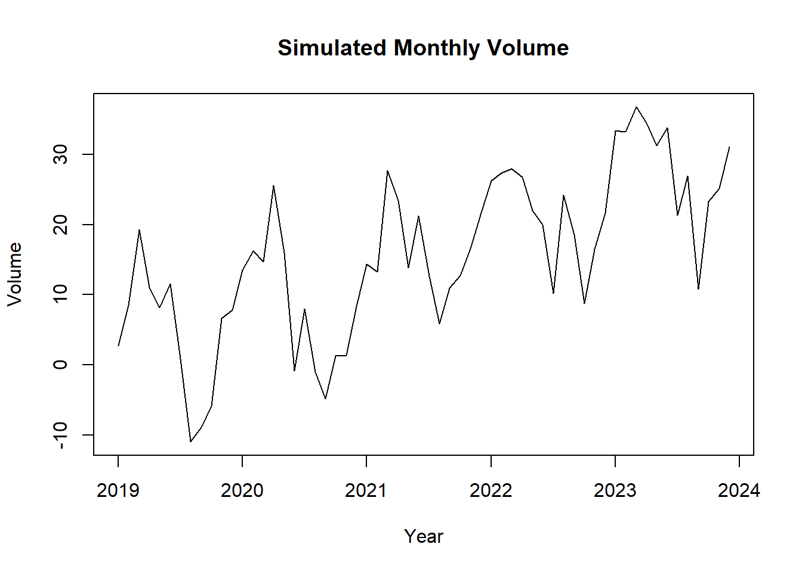
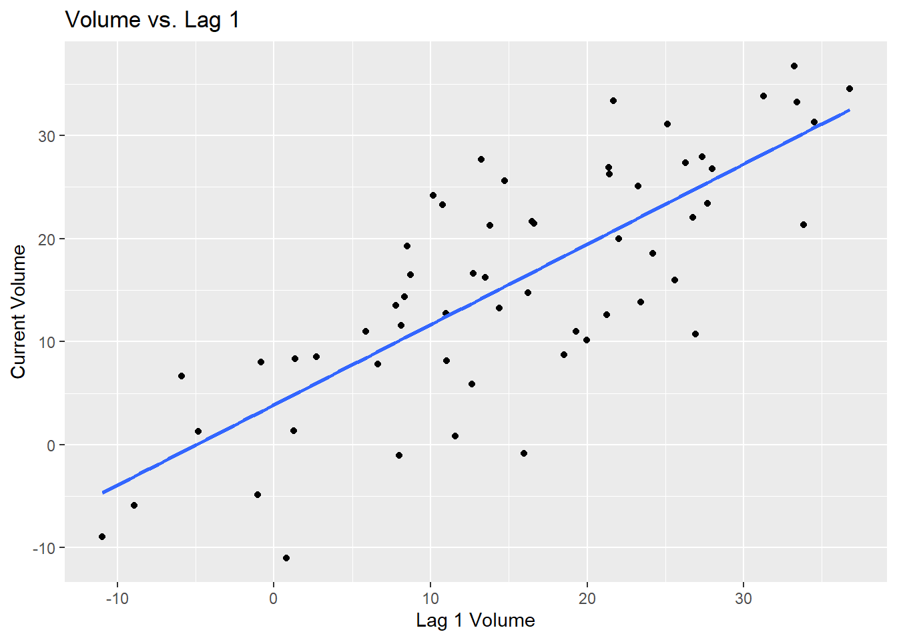
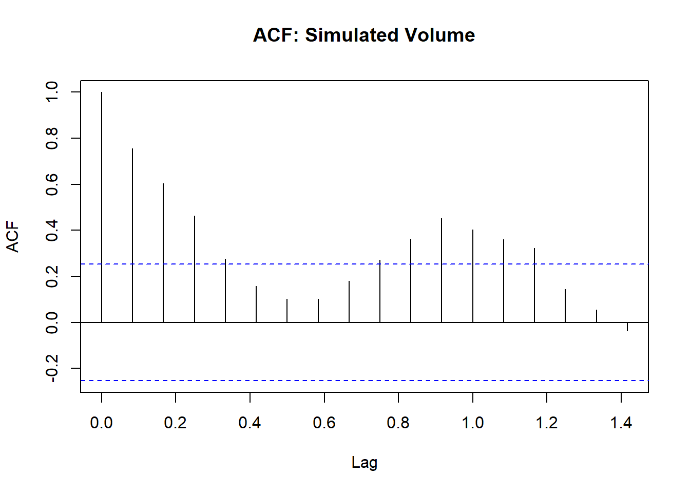
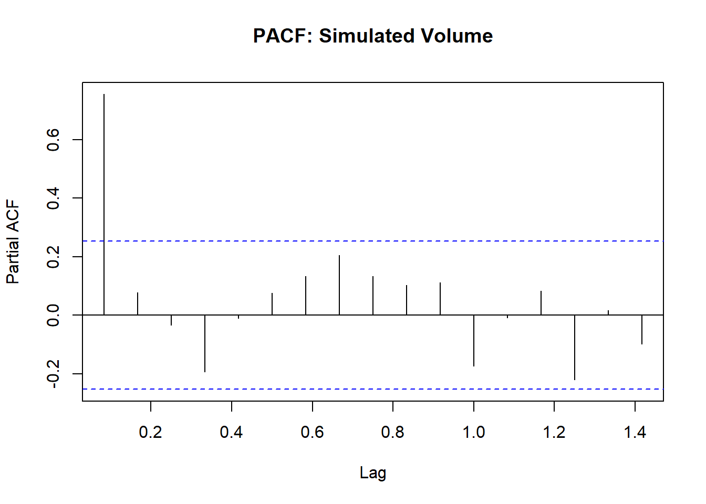
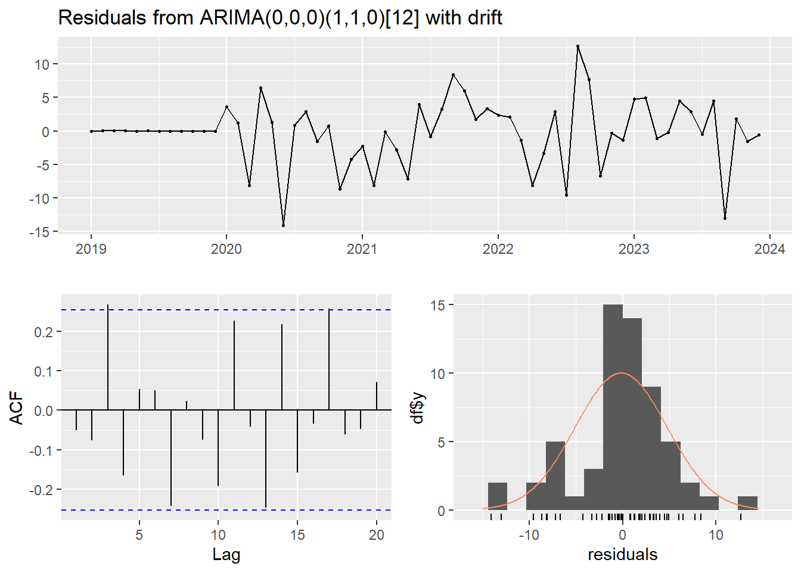
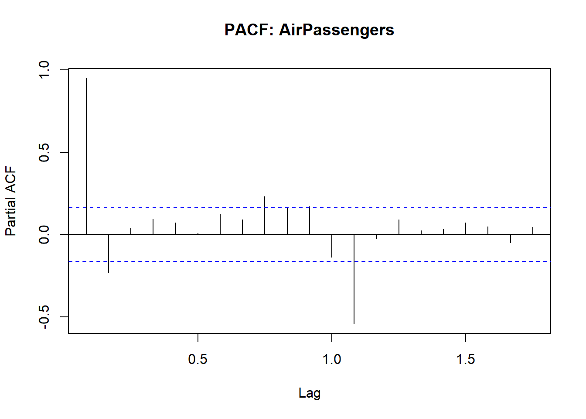
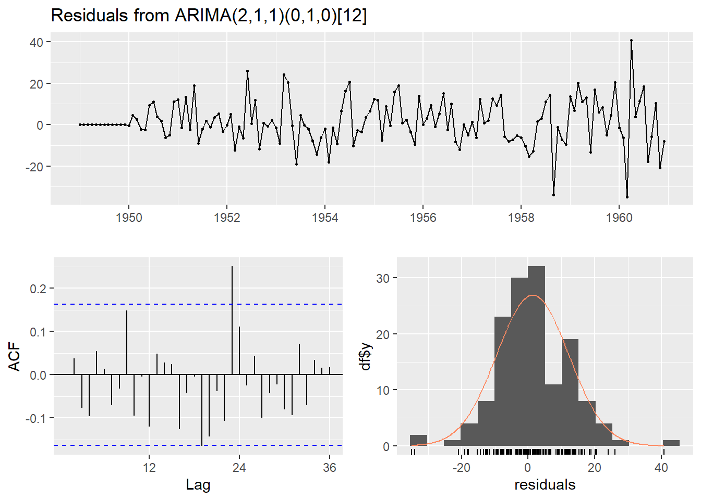
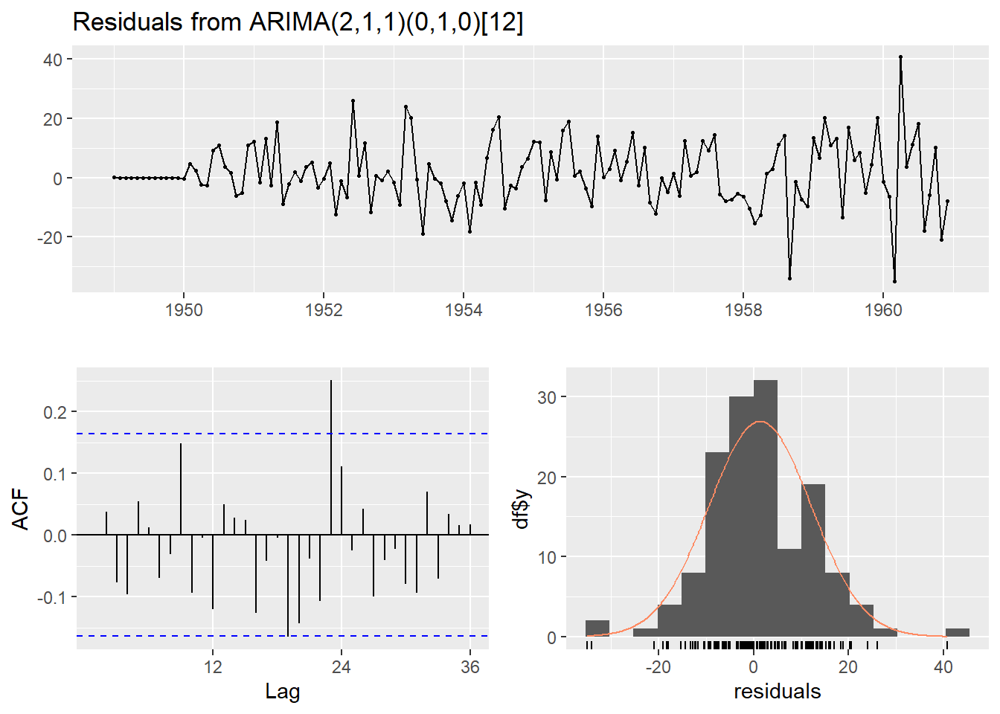

20 Additional Topics
20.1 Preliminaries
20.1.1 Installing and Loading Packages
# Helper function: install if not already installed
if (!require(wooldridge)) install.packages("wooldridge")
if (!require(AER)) install.packages("AER")
if (!require(modelsummary)) install.packages("modelsummary")
if (!require(sandwich)) install.packages("sandwich")
if (!require(lmtest)) install.packages("lmtest")
if (!require(mediation)) install.packages("mediation")
if (!require(margins)) install.packages("margins")
if (!require(plm)) install.packages("plm")
if (!require(samplingbook)) install.packages("samplingbook")
if (!require(psych)) install.packages("psych")
if (!require(igraph)) install.packages("igraph")
if (!require(ggplot2)) install.packages("ggplot2")
if (!require(tidyverse)) install.packages("tidyverse")
if (!require(forecast)) install.packages("forecast")
if (!require(zoo)) install.packages("zoo")
if (!require(tseries)) install.packages("tseries")
library(wooldridge)
library(AER)
library(modelsummary)
library(sandwich)
library(lmtest)
library(mediation)
library(margins)
library(plm)
library(samplingbook)
library(psych)
library(igraph)
library(ggplot2)
library(tidyverse)
library(forecast)
library(zoo)
library(tseries)20.1.2 Datasets Used in This Lecture
# Wooldridge datasets
data("wage1") # wages, education, experience, tenure, gender
data("wage2") # wages with father's education (for IV)
data("mroz") # female labor force participation
# Panel data
data("Grunfeld") # 10 US firms over 20 years (plm package)
# Base R time series
data("AirPassengers") # monthly airline passengers 1949-1960
# bfi dataset (psych package) - Big Five personality items
data(bfi)20.2 1. Beginning
\(wage_i=\beta_0+\beta_1 educ_i + u_i\)
The key coefficient is \(\beta_1\). It tells you how much wages change, on average, when education changes by 1 unit.
So if \(\hat{\beta}_1=0.50\), then one extra year of education is associated with 0.50 more units of wage.
The methods to be discussed:
is this relationship causal?
is it stable?
is it the same for everyone?
what happens if the outcome is binary instead of continuous?
what if treatment happens over time?
what if people affect each other through networks?
20.3 2. Causal Inference
20.3.1 Intuition
A beginner often sees a positive coefficient and immediately says: education increases wages. That is too fast. A regression can show that education and wages move together, but that does not automatically mean education caused wages to increase.
Why not?
People with more education may also differ in other ways: richer families, higher ability, more motivation, or better labor markets. If those omitted factors also affect wages, then the regression is mixing up the effect of education with those other factors.
Causal inference asks: What would happen to the same person’s wage if their education changed, holding everything else that matters fixed? That comparison is called the counterfactual idea.
20.3.2 Econometric Idea
Start with a simple model:
\[Y_i = \beta_0 + \beta_1 X_i + u_i\]
OLS works well for causal interpretation only if \(E[u_i \mid X_i] = 0\). This often fails due to omitted variable bias, reverse causality, or selection bias.
20.3.3 Simple and Multiple OLS
## [1] "wage" "educ" "exper" "tenure" "nonwhite" "female" "married" "numdep" "smsa" "northcen" "south" "west"
## [13] "construc" "ndurman" "trcommpu" "trade" "services" "profserv" "profocc" "clerocc" "servocc" "lwage" "expersq" "tenursq"##
## Call:
## lm(formula = wage ~ educ, data = wage1)
##
## Residuals:
## Min 1Q Median 3Q Max
## -5.3396 -2.1501 -0.9674 1.1921 16.6085
##
## Coefficients:
## Estimate Std. Error t value Pr(>|t|)
## (Intercept) -0.90485 0.68497 -1.321 0.187
## educ 0.54136 0.05325 10.167 <0.0000000000000002 ***
## ---
## Signif. codes: 0 '***' 0.001 '**' 0.01 '*' 0.05 '.' 0.1 ' ' 1
##
## Residual standard error: 3.378 on 524 degrees of freedom
## Multiple R-squared: 0.1648, Adjusted R-squared: 0.1632
## F-statistic: 103.4 on 1 and 524 DF, p-value: < 0.00000000000000022##
## Call:
## lm(formula = wage ~ educ + exper + tenure, data = wage1)
##
## Residuals:
## Min 1Q Median 3Q Max
## -7.6068 -1.7747 -0.6279 1.1969 14.6536
##
## Coefficients:
## Estimate Std. Error t value Pr(>|t|)
## (Intercept) -2.87273 0.72896 -3.941 0.0000922474249625 ***
## educ 0.59897 0.05128 11.679 < 0.0000000000000002 ***
## exper 0.02234 0.01206 1.853 0.0645 .
## tenure 0.16927 0.02164 7.820 0.0000000000000293 ***
## ---
## Signif. codes: 0 '***' 0.001 '**' 0.01 '*' 0.05 '.' 0.1 ' ' 1
##
## Residual standard error: 3.084 on 522 degrees of freedom
## Multiple R-squared: 0.3064, Adjusted R-squared: 0.3024
## F-statistic: 76.87 on 3 and 522 DF, p-value: < 0.00000000000000022##
## Call:
## lm(formula = log(wage) ~ educ + exper + tenure, data = wage1)
##
## Residuals:
## Min 1Q Median 3Q Max
## -2.05802 -0.29645 -0.03265 0.28788 1.42809
##
## Coefficients:
## Estimate Std. Error t value Pr(>|t|)
## (Intercept) 0.284360 0.104190 2.729 0.00656 **
## educ 0.092029 0.007330 12.555 < 0.0000000000000002 ***
## exper 0.004121 0.001723 2.391 0.01714 *
## tenure 0.022067 0.003094 7.133 0.00000000000329 ***
## ---
## Signif. codes: 0 '***' 0.001 '**' 0.01 '*' 0.05 '.' 0.1 ' ' 1
##
## Residual standard error: 0.4409 on 522 degrees of freedom
## Multiple R-squared: 0.316, Adjusted R-squared: 0.3121
## F-statistic: 80.39 on 3 and 522 DF, p-value: < 0.00000000000000022Reading the output: If the coefficient on educ is 0.09 in a log-wage model, it means that holding experience and tenure constant, one additional year of education is associated with about an 9% higher wage.
20.3.4 Instrumental Variables
An instrument \(Z\) must satisfy two conditions:
- Relevance — it must affect the endogenous variable \(X\)
- Exogeneity / exclusion restriction — it must affect \(Y\) only through \(X\), not directly
##
## Call:
## lm(formula = log(wage) ~ educ + exper + tenure, data = wage2)
##
## Residuals:
## Min 1Q Median 3Q Max
## -1.8282 -0.2401 0.0203 0.2569 1.3400
##
## Coefficients:
## Estimate Std. Error t value Pr(>|t|)
## (Intercept) 5.496696 0.110528 49.731 < 0.0000000000000002 ***
## educ 0.074864 0.006512 11.495 < 0.0000000000000002 ***
## exper 0.015328 0.003370 4.549 0.000006100 ***
## tenure 0.013375 0.002587 5.170 0.000000287 ***
## ---
## Signif. codes: 0 '***' 0.001 '**' 0.01 '*' 0.05 '.' 0.1 ' ' 1
##
## Residual standard error: 0.3877 on 931 degrees of freedom
## Multiple R-squared: 0.1551, Adjusted R-squared: 0.1524
## F-statistic: 56.97 on 3 and 931 DF, p-value: < 0.00000000000000022# IV using father's education (feduc) as instrument for educ
iv_model <- ivreg(log(wage) ~ educ + exper + tenure |
feduc + exper + tenure,
data = wage2)
summary(iv_model)##
## Call:
## ivreg(formula = log(wage) ~ educ + exper + tenure | feduc + exper +
## tenure, data = wage2)
##
## Residuals:
## Min 1Q Median 3Q Max
## -1.712589 -0.248278 0.007354 0.269977 1.356545
##
## Coefficients:
## Estimate Std. Error t value Pr(>|t|)
## (Intercept) 4.435860 0.338928 13.088 < 0.0000000000000002 ***
## educ 0.140255 0.020804 6.742 0.0000000000316 ***
## exper 0.035152 0.006307 5.574 0.0000000350183 ***
## tenure 0.007409 0.003186 2.325 0.0203 *
## ---
## Signif. codes: 0 '***' 0.001 '**' 0.01 '*' 0.05 '.' 0.1 ' ' 1
##
## Residual standard error: 0.4075 on 737 degrees of freedom
## Multiple R-Squared: 0.05179, Adjusted R-squared: 0.04793
## Wald test: 21.42 on 3 and 737 DF, p-value: 0.0000000000002593##
## Call:
## ivreg(formula = log(wage) ~ educ + exper + tenure | feduc + exper +
## tenure, data = wage2)
##
## Residuals:
## Min 1Q Median 3Q Max
## -1.712589 -0.248278 0.007354 0.269977 1.356545
##
## Coefficients:
## Estimate Std. Error t value Pr(>|t|)
## (Intercept) 4.435860 0.338928 13.088 < 0.0000000000000002 ***
## educ 0.140255 0.020804 6.742 0.0000000000316 ***
## exper 0.035152 0.006307 5.574 0.0000000350183 ***
## tenure 0.007409 0.003186 2.325 0.0203 *
##
## Diagnostic tests:
## df1 df2 statistic p-value
## Weak instruments 1 737 110.32 < 0.0000000000000002 ***
## Wu-Hausman 1 736 13.06 0.000322 ***
## Sargan 0 NA NA NA
## ---
## Signif. codes: 0 '***' 0.001 '**' 0.01 '*' 0.05 '.' 0.1 ' ' 1
##
## Residual standard error: 0.4075 on 737 degrees of freedom
## Multiple R-Squared: 0.05179, Adjusted R-squared: 0.04793
## Wald test: 21.42 on 3 and 737 DF, p-value: 0.0000000000002593Note: IV often estimates a local effect: meaning, only for the group whose education is affected by the instrument. The coefficient can differ substantially from OLS.
20.3.5 Common Mistakes
- Calling OLS causal without discussion
- meaning a positive OLS is not enough
- Ignoring omitted variables like ability or family background
- because coefficient can be biased
- Treating “holding other variables constant” as the same as causal
- not the same
- Using IV without defending relevance and exogeneity
- Thinking more controls always solve endogeneity
20.4 3. Robustness Checks
20.4.1 Intuition
A result is fragile if it disappears when you add a few controls, use robust standard errors, change the functional form, or restrict the sample. Robustness checks ask: Does my conclusion still hold under reasonable alternative modeling choices?
20.4.2 Gradual Addition of Controls
##
## Call:
## lm(formula = log(wage) ~ educ, data = wage1)
##
## Residuals:
## Min 1Q Median 3Q Max
## -2.21158 -0.36393 -0.07263 0.29712 1.52339
##
## Coefficients:
## Estimate Std. Error t value Pr(>|t|)
## (Intercept) 0.583773 0.097336 5.998 0.00000000374 ***
## educ 0.082744 0.007567 10.935 < 0.0000000000000002 ***
## ---
## Signif. codes: 0 '***' 0.001 '**' 0.01 '*' 0.05 '.' 0.1 ' ' 1
##
## Residual standard error: 0.4801 on 524 degrees of freedom
## Multiple R-squared: 0.1858, Adjusted R-squared: 0.1843
## F-statistic: 119.6 on 1 and 524 DF, p-value: < 0.00000000000000022##
## Call:
## lm(formula = log(wage) ~ educ + exper + tenure, data = wage1)
##
## Residuals:
## Min 1Q Median 3Q Max
## -2.05802 -0.29645 -0.03265 0.28788 1.42809
##
## Coefficients:
## Estimate Std. Error t value Pr(>|t|)
## (Intercept) 0.284360 0.104190 2.729 0.00656 **
## educ 0.092029 0.007330 12.555 < 0.0000000000000002 ***
## exper 0.004121 0.001723 2.391 0.01714 *
## tenure 0.022067 0.003094 7.133 0.00000000000329 ***
## ---
## Signif. codes: 0 '***' 0.001 '**' 0.01 '*' 0.05 '.' 0.1 ' ' 1
##
## Residual standard error: 0.4409 on 522 degrees of freedom
## Multiple R-squared: 0.316, Adjusted R-squared: 0.3121
## F-statistic: 80.39 on 3 and 522 DF, p-value: < 0.00000000000000022##
## Call:
## lm(formula = log(wage) ~ educ + exper + tenure + female + married,
## data = wage1)
##
## Residuals:
## Min 1Q Median 3Q Max
## -1.87254 -0.27256 -0.03779 0.25349 1.23666
##
## Coefficients:
## Estimate Std. Error t value Pr(>|t|)
## (Intercept) 0.490058 0.101108 4.847 0.00000165830384 ***
## educ 0.083905 0.006973 12.033 < 0.0000000000000002 ***
## exper 0.003134 0.001682 1.863 0.06300 .
## tenure 0.016867 0.002955 5.707 0.00000001932029 ***
## female -0.285530 0.037264 -7.662 0.00000000000009 ***
## married 0.125739 0.039986 3.145 0.00176 **
## ---
## Signif. codes: 0 '***' 0.001 '**' 0.01 '*' 0.05 '.' 0.1 ' ' 1
##
## Residual standard error: 0.4125 on 520 degrees of freedom
## Multiple R-squared: 0.4036, Adjusted R-squared: 0.3979
## F-statistic: 70.38 on 5 and 520 DF, p-value: < 0.0000000000000002220.4.3 Side-by-Side Comparison
If you don’t want stargazer, we can make a list and it will appear as a good table too. It will appear in the Viewer too:
| Simple | Exp + Tenure | Add Demographics | |
|---|---|---|---|
| (Intercept) | 0.584 | 0.284 | 0.490 |
| (0.097) | (0.104) | (0.101) | |
| educ | 0.083 | 0.092 | 0.084 |
| (0.008) | (0.007) | (0.007) | |
| exper | 0.004 | 0.003 | |
| (0.002) | (0.002) | ||
| tenure | 0.022 | 0.017 | |
| (0.003) | (0.003) | ||
| female | -0.286 | ||
| (0.037) | |||
| married | 0.126 | ||
| (0.040) | |||
| Num.Obs. | 526 | 526 | 526 |
| R2 | 0.186 | 0.316 | 0.404 |
| R2 Adj. | 0.184 | 0.312 | 0.398 |
| AIC | 2432.4 | 2344.8 | 2276.7 |
| BIC | 2445.2 | 2366.1 | 2306.5 |
| Log.Lik. | -359.378 | -313.548 | -277.505 |
| F | 119.582 | 80.391 | 70.383 |
| RMSE | 0.48 | 0.44 | 0.41 |
20.4.4 Heteroskedasticity-Robust Standard Errors
Robust SEs do not change the coefficients — only the standard errors, t-statistics, and p-values.
##
## t test of coefficients:
##
## Estimate Std. Error t value Pr(>|t|)
## (Intercept) 0.2843596 0.1117069 2.5456 0.01120 *
## educ 0.0920290 0.0079212 11.6181 < 0.00000000000000022 ***
## exper 0.0041211 0.0017459 2.3605 0.01862 *
## tenure 0.0220672 0.0037820 5.8348 0.000000009461 ***
## ---
## Signif. codes: 0 '***' 0.001 '**' 0.01 '*' 0.05 '.' 0.1 ' ' 120.4.5 Nonlinear Specification
##
## Call:
## lm(formula = log(wage) ~ educ + exper + I(exper^2) + tenure,
## data = wage1)
##
## Residuals:
## Min 1Q Median 3Q Max
## -1.97087 -0.26809 -0.03463 0.27663 1.28678
##
## Coefficients:
## Estimate Std. Error t value Pr(>|t|)
## (Intercept) 0.1983445 0.1019556 1.945 0.0523 .
## educ 0.0853489 0.0071885 11.873 < 0.0000000000000002 ***
## exper 0.0328542 0.0051135 6.425 0.0000000002979 ***
## I(exper^2) -0.0006606 0.0001111 -5.945 0.0000000050775 ***
## tenure 0.0208413 0.0030037 6.938 0.0000000000118 ***
## ---
## Signif. codes: 0 '***' 0.001 '**' 0.01 '*' 0.05 '.' 0.1 ' ' 1
##
## Residual standard error: 0.427 on 521 degrees of freedom
## Multiple R-squared: 0.3595, Adjusted R-squared: 0.3545
## F-statistic: 73.09 on 4 and 521 DF, p-value: < 0.0000000000000002220.4.6 Trimming Outliers
## Min. 1st Qu. Median Mean 3rd Qu. Max.
## 0.530 3.330 4.650 5.896 6.880 24.980## 95% 99%
## 12.875 19.995trim_data <- subset(wage1, wage < quantile(wage, 0.99))
robust5 <- lm(log(wage) ~ educ + exper + tenure, data = trim_data)
summary(robust5)##
## Call:
## lm(formula = log(wage) ~ educ + exper + tenure, data = trim_data)
##
## Residuals:
## Min 1Q Median 3Q Max
## -2.05464 -0.29310 -0.02882 0.28405 1.23528
##
## Coefficients:
## Estimate Std. Error t value Pr(>|t|)
## (Intercept) 0.319145 0.101333 3.149 0.00173 **
## educ 0.089004 0.007142 12.462 < 0.0000000000000002 ***
## exper 0.004014 0.001666 2.410 0.01631 *
## tenure 0.020525 0.003016 6.805 0.0000000000282 ***
## ---
## Signif. codes: 0 '***' 0.001 '**' 0.01 '*' 0.05 '.' 0.1 ' ' 1
##
## Residual standard error: 0.4258 on 516 degrees of freedom
## Multiple R-squared: 0.3072, Adjusted R-squared: 0.3032
## F-statistic: 76.27 on 3 and 516 DF, p-value: < 0.0000000000000002220.4.7 How to read the output
When doing robustness checks, do not read each regression separately as if it were a stand-alone project. Instead, compare across models.
Ask these questions:
Does the sign stay the same?
- If education is positive in all models, that is reassuring.
Does the size stay broadly similar?
If the coefficient moves from 0.10 to 0.08 to 0.07, that is usually acceptable.
If it moves from 0.10 to -0.03, that is a major warning sign.
Does the result stay statistically meaningful?
- If the coefficient remains precisely estimated under robust standard errors and alternative specifications, that strengthens confidence.
Does the economic interpretation stay similar?
Even if the exact coefficient changes a bit, does the basic story remain the same?
For example:
Model 1: 10% return to education
Model 2: 8% return
Model 3: 7% return
You would say:
The estimated return to education falls somewhat when additional controls are included, suggesting that part of the raw education-wage relationship reflects other factors. However, the coefficient remains positive and economically meaningful across specifications.
20.5 4. Heterogeneity Analysis
20.5.1 Intuition
A single average effect may hide important differences across groups. Does the effect of education on wages differ by gender? This is heterogeneity.
20.5.2 Econometric Idea
\[Y = \beta_0 + \beta_1 X + \beta_2 G + \beta_3 (X \times G) + u\]
- \(\beta_1\) = effect of \(X\) for the baseline group (\(G = 0\))
- \(\beta_3\) = difference in slope between groups (not the full effect for the second group)
- Effect for women: \(\beta_1 + \beta_3\)
20.5.3 Interaction Model
##
## Call:
## lm(formula = log(wage) ~ educ * female + exper + tenure, data = wage1)
##
## Residuals:
## Min 1Q Median 3Q Max
## -1.91695 -0.26530 -0.02059 0.25715 1.27586
##
## Coefficients:
## Estimate Std. Error t value Pr(>|t|)
## (Intercept) 0.464712 0.122892 3.781 0.000174 ***
## educ 0.090276 0.008715 10.359 < 0.0000000000000002 ***
## female -0.210376 0.173969 -1.209 0.227107
## exper 0.004642 0.001628 2.850 0.004541 **
## tenure 0.017436 0.002981 5.849 0.00000000876 ***
## educ:female -0.007245 0.013562 -0.534 0.593456
## ---
## Signif. codes: 0 '***' 0.001 '**' 0.01 '*' 0.05 '.' 0.1 ' ' 1
##
## Residual standard error: 0.4162 on 520 degrees of freedom
## Multiple R-squared: 0.3926, Adjusted R-squared: 0.3868
## F-statistic: 67.22 on 5 and 520 DF, p-value: < 0.00000000000000022This is equivalent to:
##
## Call:
## lm(formula = log(wage) ~ educ + female + educ:female + exper +
## tenure, data = wage1)
##
## Residuals:
## Min 1Q Median 3Q Max
## -1.91695 -0.26530 -0.02059 0.25715 1.27586
##
## Coefficients:
## Estimate Std. Error t value Pr(>|t|)
## (Intercept) 0.464712 0.122892 3.781 0.000174 ***
## educ 0.090276 0.008715 10.359 < 0.0000000000000002 ***
## female -0.210376 0.173969 -1.209 0.227107
## exper 0.004642 0.001628 2.850 0.004541 **
## tenure 0.017436 0.002981 5.849 0.00000000876 ***
## educ:female -0.007245 0.013562 -0.534 0.593456
## ---
## Signif. codes: 0 '***' 0.001 '**' 0.01 '*' 0.05 '.' 0.1 ' ' 1
##
## Residual standard error: 0.4162 on 520 degrees of freedom
## Multiple R-squared: 0.3926, Adjusted R-squared: 0.3868
## F-statistic: 67.22 on 5 and 520 DF, p-value: < 0.0000000000000002220.5.4 Separate Subgroup Regressions
male_model <- lm(log(wage) ~ educ + exper + tenure, data = subset(wage1, female == 0))
female_model <- lm(log(wage) ~ educ + exper + tenure, data = subset(wage1, female == 1))
summary(male_model)##
## Call:
## lm(formula = log(wage) ~ educ + exper + tenure, data = subset(wage1,
## female == 0))
##
## Residuals:
## Min 1Q Median 3Q Max
## -1.4849 -0.2784 -0.0103 0.2665 1.2670
##
## Coefficients:
## Estimate Std. Error t value Pr(>|t|)
## (Intercept) 0.321899 0.139460 2.308 0.02174 *
## educ 0.096264 0.009352 10.294 < 0.0000000000000002 ***
## exper 0.008127 0.002496 3.256 0.00128 **
## tenure 0.018213 0.003769 4.832 0.00000227 ***
## ---
## Signif. codes: 0 '***' 0.001 '**' 0.01 '*' 0.05 '.' 0.1 ' ' 1
##
## Residual standard error: 0.4284 on 270 degrees of freedom
## Multiple R-squared: 0.3655, Adjusted R-squared: 0.3584
## F-statistic: 51.84 on 3 and 270 DF, p-value: < 0.00000000000000022##
## Call:
## lm(formula = log(wage) ~ educ + exper + tenure, data = subset(wage1,
## female == 1))
##
## Residuals:
## Min 1Q Median 3Q Max
## -1.96850 -0.23365 -0.06671 0.21956 1.17698
##
## Coefficients:
## Estimate Std. Error t value Pr(>|t|)
## (Intercept) 0.356116 0.141063 2.525 0.0122 *
## educ 0.080036 0.010462 7.650 0.000000000000444 ***
## exper 0.002268 0.002105 1.077 0.2823
## tenure 0.010274 0.005223 1.967 0.0503 .
## ---
## Signif. codes: 0 '***' 0.001 '**' 0.01 '*' 0.05 '.' 0.1 ' ' 1
##
## Residual standard error: 0.3967 on 248 degrees of freedom
## Multiple R-squared: 0.2119, Adjusted R-squared: 0.2024
## F-statistic: 22.23 on 3 and 248 DF, p-value: 0.0000000000008771Reading the output:
- Identify the baseline group
- Interpret
educ - Interpret
educ:female - Compute the education effect for women
- Interpret
female
20.5.5 Heterogeneity with a Continuous Moderator
Sometimes the effect changes continuously with another variable, such as income.
set.seed(42)
df_het <- data.frame(
treatment = rbinom(300, 1, 0.5),
income = rnorm(300, 50000, 10000)
)
df_het$y <- 10 + 2 * df_het$treatment +
0.0001 * df_het$income -
0.00005 * df_het$treatment * df_het$income +
rnorm(300)
het_cont <- lm(y ~ treatment * income, data = df_het)
summary(het_cont)##
## Call:
## lm(formula = y ~ treatment * income, data = df_het)
##
## Residuals:
## Min 1Q Median 3Q Max
## -2.9386 -0.6412 0.0113 0.7243 3.3772
##
## Coefficients:
## Estimate Std. Error t value Pr(>|t|)
## (Intercept) 10.133329521 0.466720653 21.712 < 0.0000000000000002 ***
## treatment 2.133953801 0.626572403 3.406 0.000751 ***
## income 0.000094815 0.000009197 10.309 < 0.0000000000000002 ***
## treatment:income -0.000050444 0.000012353 -4.084 0.0000571 ***
## ---
## Signif. codes: 0 '***' 0.001 '**' 0.01 '*' 0.05 '.' 0.1 ' ' 1
##
## Residual standard error: 1.002 on 296 degrees of freedom
## Multiple R-squared: 0.332, Adjusted R-squared: 0.3252
## F-statistic: 49.03 on 3 and 296 DF, p-value: < 0.00000000000000022The treatment effect is \(\frac{\partial y}{\partial \text{treatment}} = \beta_1 + \beta_3 \cdot \text{income}\).
Interpretation:
treatment is the treatment effect when income is zero
treatment:income shows how the treatment effect changes as income rises
20.6 5. Moderation Analysis
20.6.1 Intuition
Moderation asks: Does the effect of X on Y depend on another variable (the moderator)?
Examples: Does education matter more in urban areas? Does training help more for younger workers?
20.6.2 Econometric Idea
\[Y = \beta_0 + \beta_1 X + \beta_2 M + \beta_3 (X \times M) + u\]
\[\frac{\partial Y}{\partial X} = \beta_1 + \beta_3 M\]
The slope of \(X\) is not fixed — it depends on the value of the moderator.
20.6.3 R Code
set.seed(1)
df_mod <- data.frame(
x = rnorm(300),
moderator = rnorm(300)
)
df_mod$y <- 1 + 2 * df_mod$x + 1.5 * df_mod$moderator +
3 * (df_mod$x * df_mod$moderator) + rnorm(300)
mod_model <- lm(y ~ x * moderator, data = df_mod)
summary(mod_model)##
## Call:
## lm(formula = y ~ x * moderator, data = df_mod)
##
## Residuals:
## Min 1Q Median 3Q Max
## -2.90475 -0.80807 0.02178 0.78318 3.09584
##
## Coefficients:
## Estimate Std. Error t value Pr(>|t|)
## (Intercept) 0.93750 0.06305 14.87 <0.0000000000000002 ***
## x 2.03920 0.06610 30.85 <0.0000000000000002 ***
## moderator 1.54063 0.06047 25.48 <0.0000000000000002 ***
## x:moderator 2.93700 0.05906 49.73 <0.0000000000000002 ***
## ---
## Signif. codes: 0 '***' 0.001 '**' 0.01 '*' 0.05 '.' 0.1 ' ' 1
##
## Residual standard error: 1.091 on 296 degrees of freedom
## Multiple R-squared: 0.9261, Adjusted R-squared: 0.9254
## F-statistic: 1237 on 3 and 296 DF, p-value: < 0.00000000000000022Reading the output: If x = 2.0 and x:moderator = 3.0, then:
- When moderator = 0: effect of x = 2
- When moderator = 1: effect of x = 5
- When moderator = −1: effect of x = −1
20.6.4 Visualization
df_mod$high_mod <- ifelse(df_mod$moderator > 0, 1, 0)
ggplot(df_mod, aes(x = x, y = y, color = factor(high_mod))) +
geom_point(alpha = 0.5) +
geom_smooth(method = "lm", se = FALSE) +
labs(title = "Moderation: Effect of X by Moderator Level",
color = "High Moderator")## `geom_smooth()` using formula = 'y ~ x'20.7 6. Mediation Analysis
20.7.1 Intuition
Mediation asks not only Does X affect Y? but also Through what channel? This separates the total effect into a direct effect and an indirect effect through a mediator.
20.7.2 Econometric Idea
Two equations:
- \(M = \alpha_0 + \alpha_1 X + u\) — does X affect the mediator?
- \(Y = \beta_0 + \beta_1 X + \beta_2 M + v\) — does the mediator affect Y, controlling for X?
If education affects skills, and skills affect wages, then part of education’s effect on wages is mediated through skills.
Key quantities: ACME: Average Causal Mediation Effect (indirect effect), ADE: Average Direct Effect (direct effect), Total Effect.
20.7.3 R Code
set.seed(1)
df_med <- data.frame(x = rnorm(400))
df_med$m <- 0.6 * df_med$x + rnorm(400) #mediator
df_med$y <- 1.0 * df_med$x + 2.0 * df_med$m + rnorm(400)
med_model_m <- lm(m ~ x, data = df_med)
summary(med_model_m)##
## Call:
## lm(formula = m ~ x, data = df_med)
##
## Residuals:
## Min 1Q Median 3Q Max
## -2.9132 -0.7443 -0.0463 0.7516 3.8310
##
## Coefficients:
## Estimate Std. Error t value Pr(>|t|)
## (Intercept) -0.07197 0.05407 -1.331 0.184
## x 0.63230 0.05579 11.333 <0.0000000000000002 ***
## ---
## Signif. codes: 0 '***' 0.001 '**' 0.01 '*' 0.05 '.' 0.1 ' ' 1
##
## Residual standard error: 1.08 on 398 degrees of freedom
## Multiple R-squared: 0.244, Adjusted R-squared: 0.2421
## F-statistic: 128.4 on 1 and 398 DF, p-value: < 0.00000000000000022med_model_y <- lm(y ~ x + m, data = df_med) #does the mediator predict y after controlling for x?
summary(med_model_y)##
## Call:
## lm(formula = y ~ x + m, data = df_med)
##
## Residuals:
## Min 1Q Median 3Q Max
## -3.1768 -0.7045 0.0151 0.7333 3.0897
##
## Coefficients:
## Estimate Std. Error t value Pr(>|t|)
## (Intercept) -0.03675 0.05222 -0.704 0.482
## x 1.00046 0.06184 16.179 <0.0000000000000002 ***
## m 2.00610 0.04831 41.529 <0.0000000000000002 ***
## ---
## Signif. codes: 0 '***' 0.001 '**' 0.01 '*' 0.05 '.' 0.1 ' ' 1
##
## Residual standard error: 1.041 on 397 degrees of freedom
## Multiple R-squared: 0.8983, Adjusted R-squared: 0.8978
## F-statistic: 1753 on 2 and 397 DF, p-value: < 0.00000000000000022med_out <- mediation::mediate(med_model_m, med_model_y, #we use the mediation package
treat = "x",
mediator = "m",
boot = TRUE,
sims = 500)## Running nonparametric bootstrap##
## Causal Mediation Analysis
##
## Nonparametric Bootstrap Confidence Intervals with the Percentile Method
##
## Estimate 95% CI Lower 95% CI Upper p-value
## ACME 1.26846 1.04275 1.50707 < 0.00000000000000022 ***
## ADE 1.00046 0.87873 1.12612 < 0.00000000000000022 ***
## Total Effect 2.26891 2.02710 2.52811 < 0.00000000000000022 ***
## Prop. Mediated 0.55906 0.49996 0.61636 < 0.00000000000000022 ***
## ---
## Signif. codes: 0 '***' 0.001 '**' 0.01 '*' 0.05 '.' 0.1 ' ' 1
##
## Sample Size Used: 400
##
##
## Simulations: 500Interpretation example:
- ACME
This is the indirect effect through the mediator.
If ACME is positive and meaningful, then part of the effect of x on y flows through m.
- ADE
This is the direct effect of x on y that is not going through m.
- Total Effect
This is the overall effect of x on y.
- Proportion mediated
This tells you what share of the total effect is explained by the mediator.
If ACME = 1.1, ADE = 0.8, Total = 1.9, then about 1.1 units of the effect of X on Y flow through the mediator, and 0.8 units operate through other channels.
20.8 7. Logistic Regression
20.8.1 Intuition
When the dependent variable is binary (employed / not employed, participates / does not), OLS is not ideal because predicted values can fall outside [0, 1]. Logistic regression models probabilities appropriately.
20.8.2 Econometric Idea
\[P(Y = 1 \mid X) = \frac{1}{1 + e^{-X\beta}}\]
Raw coefficients describe changes in log-odds, not probabilities. Focus on marginal effects and predicted probabilities for interpretation.
20.8.3 R Code
## [1] "inlf" "hours" "kidslt6" "kidsge6" "age" "educ" "wage" "repwage" "hushrs" "husage" "huseduc" "huswage"
## [13] "faminc" "mtr" "motheduc" "fatheduc" "unem" "city" "exper" "nwifeinc" "lwage" "expersq"logit1 <- glm(inlf ~ educ + exper + age + kidslt6, #generalized linear model
data = mroz,
family = binomial(link = "logit")) #sets logistic regression
summary(logit1)##
## Call:
## glm(formula = inlf ~ educ + exper + age + kidslt6, family = binomial(link = "logit"),
## data = mroz)
##
## Coefficients:
## Estimate Std. Error z value Pr(>|z|)
## (Intercept) 1.31195 0.73482 1.785 0.0742 .
## educ 0.18824 0.03997 4.710 0.0000024815263609 ***
## exper 0.12403 0.01319 9.401 < 0.0000000000000002 ***
## age -0.09984 0.01328 -7.518 0.0000000000000555 ***
## kidslt6 -1.44603 0.19836 -7.290 0.0000000000003101 ***
## ---
## Signif. codes: 0 '***' 0.001 '**' 0.01 '*' 0.05 '.' 0.1 ' ' 1
##
## (Dispersion parameter for binomial family taken to be 1)
##
## Null deviance: 1029.75 on 752 degrees of freedom
## Residual deviance: 818.94 on 748 degrees of freedom
## AIC: 828.94
##
## Number of Fisher Scoring iterations: 4## 1 2 3 4 5 6
## 0.6607172 0.7677956 0.6203450 0.7151622 0.5682189 0.9065924## factor AME SE z p lower upper
## age -0.0183 0.0021 -8.7609 0.0000 -0.0224 -0.0142
## educ 0.0345 0.0069 4.9640 0.0000 0.0208 0.0481
## exper 0.0227 0.0019 12.1384 0.0000 0.0190 0.0264
## kidslt6 -0.2646 0.0315 -8.4084 0.0000 -0.3263 -0.2030## (Intercept) educ exper age kidslt6
## 3.7133901 1.2071263 1.1320524 0.9049849 0.2355033Reading the output:
- Raw coefficient — change in log-odds (not directly interpretable as probability)
- Odds ratio — if
exp(coef)for education is 1.10, the odds increase by ~10%- one more year of education multiplies the odds of labor force participation by 1.10 which means the odds increase by about 10%
- Marginal effect — if AME for
educis 0.03, one more year of education raises the probability of labor force participation by ~3 percentage points on average - Predicted probability - If a woman has predicted probability 0.72 means estimated probability of being in the labor force is 72%.
20.9 8. Probit Regression
20.9.1 Intuition
Probit solves the same problem as logit but uses the normal CDF instead of the logistic CDF. In practice, logit and probit usually give similar conclusions.
20.9.2 R Code
probit1 <- glm(inlf ~ educ + exper + age + kidslt6,
data = mroz,
family = binomial(link = "probit"))
summary(probit1)##
## Call:
## glm(formula = inlf ~ educ + exper + age + kidslt6, family = binomial(link = "probit"),
## data = mroz)
##
## Coefficients:
## Estimate Std. Error z value Pr(>|z|)
## (Intercept) 0.85818 0.43586 1.969 0.049 *
## educ 0.11170 0.02341 4.771 0.00000183050189589 ***
## exper 0.07289 0.00741 9.836 < 0.0000000000000002 ***
## age -0.06080 0.00769 -7.906 0.00000000000000266 ***
## kidslt6 -0.87825 0.11551 -7.603 0.00000000000002889 ***
## ---
## Signif. codes: 0 '***' 0.001 '**' 0.01 '*' 0.05 '.' 0.1 ' ' 1
##
## (Dispersion parameter for binomial family taken to be 1)
##
## Null deviance: 1029.75 on 752 degrees of freedom
## Residual deviance: 818.82 on 748 degrees of freedom
## AIC: 828.82
##
## Number of Fisher Scoring iterations: 4## factor AME SE z p lower upper
## age -0.0187 0.0021 -9.0329 0.0000 -0.0228 -0.0147
## educ 0.0344 0.0069 4.9811 0.0000 0.0208 0.0479
## exper 0.0224 0.0018 12.2454 0.0000 0.0188 0.0260
## kidslt6 -0.2703 0.0315 -8.5901 0.0000 -0.3319 -0.2086## 1 2 3 4 5 6
## 0.6536409 0.7700535 0.6124299 0.7152241 0.5671615 0.9066983Interpretation: If the marginal effect of kidslt6 is −0.15, then one additional child under age 6 is associated with a 15 percentage point lower probability of labor force participation, on average.
Do not compare raw logit and probit coefficients directly — their scales differ. Compare signs, significance, marginal effects, and predicted probabilities.
20.10 9. Difference-in-Differences (DID)
20.10.1 Intuition
DID is one of the most important tools for policy evaluation. You observe treated and control groups before and after a policy and ask whether the treated group changed more than the control group.
Example:
- Treated: wage rises from 10 → 15, change = +5
- Control: wage rises from 8 → 10, change = +2
- DID estimate: 5 − 2 = 3
The control group tells you what would have happened over time without the policy.
20.10.2 Econometric Idea
\[Y = \beta_0 + \beta_1 \text{Treat} + \beta_2 \text{Post} + \beta_3 (\text{Treat} \times \text{Post}) + u\]
\(\beta_3\) is the DID estimate. The key assumption is parallel trends: in the absence of treatment, both groups would have followed the same trend.
20.10.3 R Code
set.seed(123)
did_df <- data.frame(
treat = sample(0:1, 500, replace = TRUE),
post = sample(0:1, 500, replace = TRUE)
)
did_df$y <- 5 +
1 * did_df$treat +
1 * did_df$post +
2 * (did_df$treat * did_df$post) +
rnorm(500)
did_model <- lm(y ~ treat * post, data = did_df)
summary(did_model)##
## Call:
## lm(formula = y ~ treat * post, data = did_df)
##
## Residuals:
## Min 1Q Median 3Q Max
## -2.69257 -0.68939 0.03169 0.63584 2.80207
##
## Coefficients:
## Estimate Std. Error t value Pr(>|t|)
## (Intercept) 5.04480 0.09123 55.297 < 0.0000000000000002 ***
## treat 0.83799 0.12928 6.482 0.000000000219141 ***
## post 0.97763 0.12547 7.792 0.000000000000039 ***
## treat:post 2.17827 0.18134 12.012 < 0.0000000000000002 ***
## ---
## Signif. codes: 0 '***' 0.001 '**' 0.01 '*' 0.05 '.' 0.1 ' ' 1
##
## Residual standard error: 1.012 on 496 degrees of freedom
## Multiple R-squared: 0.6825, Adjusted R-squared: 0.6806
## F-statistic: 355.4 on 3 and 496 DF, p-value: < 0.00000000000000022Reading the output:
| Coefficient | Meaning |
|---|---|
| Intercept | Mean outcome for the control group before treatment |
treat |
Baseline difference between treated and control groups |
post |
Time change for the control group |
treat:post |
DID estimate — the main coefficient of interest |
If treat:post = 2: After accounting for baseline group differences and common time changes, the treatment increased the outcome by about 2 units.
20.12 11. Designing and Testing a Survey
20.12.1 Calculating Sample Size — Proportions
When conducting a survey, sample size depends on population size, margin of error, confidence level, and type of estimate.
\[n = \frac{Z^2 \cdot p \cdot (1 - p)}{E^2}\]
Scenario 1: Study how noise pollution affects life satisfaction among DLSU students (N ≈ 20,000), with ±5% precision at 95% confidence.
##
## sample.size.prop object: Sample size for proportion estimate
## With finite population correction: N=20000, precision e=0.05 and expected proportion P=0.5
##
## Sample size needed: 37720.12.2 Calculating Sample Size — Means
\[n = \left(\frac{Z \cdot S}{E}\right)^2\]
Scenario 2: Estimate the average life satisfaction score (1–5 scale), with ±0.2 precision, assuming SD = 1.1.
##
## sample.size.mean object: Sample size for mean estimate
## With finite population correction: N=20000, precision e=0.2 and standard deviation S=1.1
##
## Sample size needed: 11620.12.3 Testing Survey Reliability — Cronbach’s Alpha
Cronbach’s alpha measures how consistently survey items work together to measure the same concept. Aim for \(\alpha \geq 0.70\) in social science research.
Example Questionnaire (5-point Likert Scale):
- I am frequently disturbed by noise in my study areas.
- Noise pollution negatively affects my concentration.
- I feel more satisfied with life when my environment is quiet.
- I find it difficult to relax due to noise around campus.
- A quieter environment improves my overall well-being.
set.seed(123)
survey_data <- data.frame(
Q1 = sample(1:5, 100, replace = TRUE),
Q2 = sample(1:5, 100, replace = TRUE),
Q3 = sample(1:5, 100, replace = TRUE),
Q4 = sample(1:5, 100, replace = TRUE),
Q5 = sample(1:5, 100, replace = TRUE)
)
psych::alpha(survey_data)## Some items ( Q1 Q2 ) were negatively correlated with the first principal component and
## probably should be reversed.
## To do this, run the function again with the 'check.keys=TRUE' option##
## Reliability analysis
## Call: psych::alpha(x = survey_data)
##
## raw_alpha std.alpha G6(smc) average_r S/N ase mean sd median_r
## 0.034 0.026 0.05 0.0052 0.026 0.15 3 0.65 0.0018
##
## 95% confidence boundaries
## lower alpha upper
## Feldt -0.30 0.03 0.30
## Duhachek -0.26 0.03 0.33
##
## Reliability if an item is dropped:
## raw_alpha std.alpha G6(smc) average_r S/N alpha se var.r med.r
## Q1 0.072 0.072 0.080 0.0191 0.078 0.15 0.0097 0.0071
## Q2 0.034 0.029 0.047 0.0074 0.030 0.16 0.0102 0.0013
## Q3 -0.114 -0.127 -0.075 -0.0291 -0.113 0.18 0.0074 -0.0024
## Q4 0.083 0.081 0.065 0.0215 0.088 0.15 0.0015 0.0035
## Q5 0.039 0.028 0.058 0.0071 0.029 0.16 0.0153 0.0189
##
## Item statistics
## n raw.r std.r r.cor r.drop mean sd
## Q1 100 0.41 0.41 -0.077 -0.0219 2.9 1.4
## Q2 100 0.48 0.45 0.066 0.0096 3.0 1.5
## Q3 100 0.55 0.54 0.521 0.1130 3.0 1.5
## Q4 100 0.37 0.41 -0.022 -0.0357 3.0 1.3
## Q5 100 0.44 0.45 0.019 0.0046 2.9 1.4
##
## Non missing response frequency for each item
## 1 2 3 4 5 miss
## Q1 0.21 0.20 0.23 0.17 0.19 0
## Q2 0.25 0.20 0.14 0.17 0.24 0
## Q3 0.21 0.24 0.16 0.14 0.25 0
## Q4 0.17 0.20 0.23 0.26 0.14 0
## Q5 0.22 0.19 0.22 0.19 0.18 0Warning: If some items are negatively correlated with the first principal component, they may be reverse-coded. Fix this with check.keys = TRUE:
##
## Reliability analysis
## Call: psych::alpha(x = survey_data, check.keys = TRUE)
##
## raw_alpha std.alpha G6(smc) average_r S/N ase mean sd median_r
## 0.2 0.21 0.2 0.051 0.27 0.13 3 0.7 0.0095
##
## 95% confidence boundaries
## lower alpha upper
## Feldt -0.07 0.2 0.43
## Duhachek -0.04 0.2 0.45
##
## Reliability if an item is dropped:
## raw_alpha std.alpha G6(smc) average_r S/N alpha se var.r med.r
## Q1- 0.151 0.161 0.145 0.046 0.191 0.14 0.0076 0.0071
## Q2- 0.191 0.196 0.169 0.057 0.244 0.13 0.0063 0.0095
## Q3 0.201 0.203 0.169 0.060 0.255 0.13 0.0041 0.0463
## Q4 0.039 0.041 0.036 0.010 0.042 0.16 0.0019 0.0058
## Q5 0.250 0.263 0.228 0.082 0.357 0.12 0.0073 0.1064
##
## Item statistics
## n raw.r std.r r.cor r.drop mean sd
## Q1- 100 0.50 0.50 0.241 0.1086 3.1 1.4
## Q2- 100 0.50 0.48 0.178 0.0718 3.0 1.5
## Q3 100 0.48 0.47 0.174 0.0615 3.0 1.5
## Q4 100 0.56 0.59 0.474 0.2231 3.0 1.3
## Q5 100 0.41 0.42 0.018 0.0085 2.9 1.4
##
## Non missing response frequency for each item
## 1 2 3 4 5 miss
## Q1 0.21 0.20 0.23 0.17 0.19 0
## Q2 0.25 0.20 0.14 0.17 0.24 0
## Q3 0.21 0.24 0.16 0.14 0.25 0
## Q4 0.17 0.20 0.23 0.26 0.14 0
## Q5 0.22 0.19 0.22 0.19 0.18 0Output tables to read:
| Table | Key column | What to look for |
|---|---|---|
| General Reliability | raw_alpha |
≥ 0.70 is acceptable |
| Alpha if Item Dropped | raw_alpha |
Items that hurt reliability |
| Item Correlations | r.cor, r.drop |
Should be positive and > 0.3 |
20.12.4 Using a Real Likert Dataset
agree_items <- bfi[, c("A1", "A2", "A3", "A4", "A5")]
agree_items <- na.omit(agree_items)
alpha_result <- psych::alpha(agree_items)## Some items ( A1 ) were negatively correlated with the first principal component and
## probably should be reversed.
## To do this, run the function again with the 'check.keys=TRUE' option##
## Reliability analysis
## Call: psych::alpha(x = agree_items)
##
## raw_alpha std.alpha G6(smc) average_r S/N ase mean sd median_r
## 0.43 0.46 0.53 0.14 0.84 0.017 4.2 0.74 0.32
##
## 95% confidence boundaries
## lower alpha upper
## Feldt 0.4 0.43 0.46
## Duhachek 0.4 0.43 0.46
##
## Reliability if an item is dropped:
## raw_alpha std.alpha G6(smc) average_r S/N alpha se var.r med.r
## A1 0.72 0.73 0.67 0.397 2.64 0.0089 0.0066 0.375
## A2 0.28 0.30 0.39 0.096 0.42 0.0223 0.1106 0.079
## A3 0.17 0.20 0.31 0.060 0.25 0.0253 0.1015 0.079
## A4 0.25 0.30 0.44 0.098 0.43 0.0233 0.1614 0.103
## A5 0.21 0.23 0.36 0.071 0.31 0.0242 0.1322 0.093
##
## Item statistics
## n raw.r std.r r.cor r.drop mean sd
## A1 2709 0.055 0.021 -0.40 -0.31 2.4 1.4
## A2 2709 0.631 0.665 0.58 0.37 4.8 1.2
## A3 2709 0.728 0.743 0.72 0.48 4.6 1.3
## A4 2709 0.689 0.661 0.50 0.37 4.7 1.5
## A5 2709 0.701 0.718 0.64 0.45 4.6 1.3
##
## Non missing response frequency for each item
## 1 2 3 4 5 6 miss
## A1 0.33 0.30 0.14 0.12 0.08 0.03 0
## A2 0.02 0.05 0.05 0.20 0.37 0.31 0
## A3 0.03 0.06 0.08 0.20 0.36 0.27 0
## A4 0.05 0.08 0.07 0.16 0.24 0.41 0
## A5 0.02 0.07 0.09 0.22 0.35 0.25 020.13 12. Panel Data Models (Fixed vs. Random Effects)
Panel data: the same individuals (or units) are observed across multiple time periods.
20.13.2 Fixed Effects vs. Random Effects
| Model | Key idea | Use when |
|---|---|---|
Fixed Effects (within) |
Uses variation within each individual over time; removes time-invariant traits | Interested in how changes within individuals affect outcomes |
Random Effects (random) |
Assumes individual effects are random and uncorrelated with predictors; can include time-invariant variables | Comparing differences across individuals; want to include traits like gender or region |
## Oneway (individual) effect Within Model
##
## Call:
## plm(formula = y ~ x, data = pdata_sim, model = "within")
##
## Balanced Panel: n = 5, T = 3, N = 15
##
## Residuals:
## Min. 1st Qu. Median 3rd Qu. Max.
## -1.122145 -0.725146 -0.017663 0.605705 1.312598
##
## Coefficients:
## Estimate Std. Error t-value Pr(>|t|)
## x -0.84218 0.37470 -2.2476 0.0512 .
## ---
## Signif. codes: 0 '***' 0.001 '**' 0.01 '*' 0.05 '.' 0.1 ' ' 1
##
## Total Sum of Squares: 15.31
## Residual Sum of Squares: 9.8057
## R-Squared: 0.35952
## Adj. R-Squared: 0.003691
## F-statistic: 5.05187 on 1 and 9 DF, p-value: 0.051201## Oneway (individual) effect Random Effect Model
## (Swamy-Arora's transformation)
##
## Call:
## plm(formula = y ~ x, data = pdata_sim, model = "random")
##
## Balanced Panel: n = 5, T = 3, N = 15
##
## Effects:
## var std.dev share
## idiosyncratic 1.090 1.044 1
## individual 0.000 0.000 0
## theta: 0
##
## Residuals:
## Min. 1st Qu. Median 3rd Qu. Max.
## -1.63076 -0.83589 0.11735 0.72396 1.60535
##
## Coefficients:
## Estimate Std. Error z-value Pr(>|z|)
## (Intercept) 55.85115 3.23285 17.2761 < 0.0000000000000002 ***
## x -0.60062 0.31741 -1.8923 0.05845 .
## ---
## Signif. codes: 0 '***' 0.001 '**' 0.01 '*' 0.05 '.' 0.1 ' ' 1
##
## Total Sum of Squares: 16.712
## Residual Sum of Squares: 13.103
## R-Squared: 0.21596
## Adj. R-Squared: 0.15564
## Chisq: 3.5807 on 1 DF, p-value: 0.05845520.13.3 Hausman Test
If p-value > 0.05 → use Random Effects. If p-value < 0.05 → use Fixed Effects.
##
## Hausman Test
##
## data: y ~ x
## chisq = 1.4717, df = 1, p-value = 0.2251
## alternative hypothesis: one model is inconsistent20.13.4 Real Data Example — Grunfeld Dataset
10 US firms over 20 years (1935–1954). Variables: inv (investment), value, capital.
## firm year inv value capital
## 1 1 1935 317.6 3078.5 2.8
## 2 1 1936 391.8 4661.7 52.6
## 3 1 1937 410.6 5387.1 156.9
## 4 1 1938 257.7 2792.2 209.2
## 5 1 1939 330.8 4313.2 203.4
## 6 1 1940 461.2 4643.9 207.2panel <- pdata.frame(Grunfeld, index = c("firm", "year"))
fe_ex <- plm(inv ~ value + capital, data = panel, model = "within")
summary(fe_ex)## Oneway (individual) effect Within Model
##
## Call:
## plm(formula = inv ~ value + capital, data = panel, model = "within")
##
## Balanced Panel: n = 10, T = 20, N = 200
##
## Residuals:
## Min. 1st Qu. Median 3rd Qu. Max.
## -184.00857 -17.64316 0.56337 19.19222 250.70974
##
## Coefficients:
## Estimate Std. Error t-value Pr(>|t|)
## value 0.110124 0.011857 9.2879 < 0.00000000000000022 ***
## capital 0.310065 0.017355 17.8666 < 0.00000000000000022 ***
## ---
## Signif. codes: 0 '***' 0.001 '**' 0.01 '*' 0.05 '.' 0.1 ' ' 1
##
## Total Sum of Squares: 2244400
## Residual Sum of Squares: 523480
## R-Squared: 0.76676
## Adj. R-Squared: 0.75311
## F-statistic: 309.014 on 2 and 188 DF, p-value: < 0.000000000000000222## Oneway (individual) effect Random Effect Model
## (Swamy-Arora's transformation)
##
## Call:
## plm(formula = inv ~ value + capital, data = panel, model = "random")
##
## Balanced Panel: n = 10, T = 20, N = 200
##
## Effects:
## var std.dev share
## idiosyncratic 2784.46 52.77 0.282
## individual 7089.80 84.20 0.718
## theta: 0.8612
##
## Residuals:
## Min. 1st Qu. Median 3rd Qu. Max.
## -177.6063 -19.7350 4.6851 19.5105 252.8743
##
## Coefficients:
## Estimate Std. Error z-value Pr(>|z|)
## (Intercept) -57.834415 28.898935 -2.0013 0.04536 *
## value 0.109781 0.010493 10.4627 < 0.0000000000000002 ***
## capital 0.308113 0.017180 17.9339 < 0.0000000000000002 ***
## ---
## Signif. codes: 0 '***' 0.001 '**' 0.01 '*' 0.05 '.' 0.1 ' ' 1
##
## Total Sum of Squares: 2381400
## Residual Sum of Squares: 548900
## R-Squared: 0.7695
## Adj. R-Squared: 0.76716
## Chisq: 657.674 on 2 DF, p-value: < 0.000000000000000222##
## Hausman Test
##
## data: inv ~ value + capital
## chisq = 2.3304, df = 2, p-value = 0.3119
## alternative hypothesis: one model is inconsistent20.14 13. A Practical Mini Workflow
Step 1: Baseline regression — understand the basic relationship
Step 2: Ask about causality — omitted variables, reverse causality, selection
Step 3: Robustness checks — does the result survive alternative specifications?
Step 4: Heterogeneity — does the effect differ across groups?
Step 5: Binary outcome? — use logit or probit
Step 6: Groups + time? — consider DID for policy evaluation
Step 7: Mechanisms? — consider mediation
Step 8: Spillovers? — consider network analysis
20.14.1 Mini Practice Flow in R
##
## Call:
## lm(formula = log(wage) ~ educ, data = wage1)
##
## Residuals:
## Min 1Q Median 3Q Max
## -2.21158 -0.36393 -0.07263 0.29712 1.52339
##
## Coefficients:
## Estimate Std. Error t value Pr(>|t|)
## (Intercept) 0.583773 0.097336 5.998 0.00000000374 ***
## educ 0.082744 0.007567 10.935 < 0.0000000000000002 ***
## ---
## Signif. codes: 0 '***' 0.001 '**' 0.01 '*' 0.05 '.' 0.1 ' ' 1
##
## Residual standard error: 0.4801 on 524 degrees of freedom
## Multiple R-squared: 0.1858, Adjusted R-squared: 0.1843
## F-statistic: 119.6 on 1 and 524 DF, p-value: < 0.00000000000000022##
## Call:
## lm(formula = log(wage) ~ educ + exper + tenure, data = wage1)
##
## Residuals:
## Min 1Q Median 3Q Max
## -2.05802 -0.29645 -0.03265 0.28788 1.42809
##
## Coefficients:
## Estimate Std. Error t value Pr(>|t|)
## (Intercept) 0.284360 0.104190 2.729 0.00656 **
## educ 0.092029 0.007330 12.555 < 0.0000000000000002 ***
## exper 0.004121 0.001723 2.391 0.01714 *
## tenure 0.022067 0.003094 7.133 0.00000000000329 ***
## ---
## Signif. codes: 0 '***' 0.001 '**' 0.01 '*' 0.05 '.' 0.1 ' ' 1
##
## Residual standard error: 0.4409 on 522 degrees of freedom
## Multiple R-squared: 0.316, Adjusted R-squared: 0.3121
## F-statistic: 80.39 on 3 and 522 DF, p-value: < 0.00000000000000022##
## t test of coefficients:
##
## Estimate Std. Error t value Pr(>|t|)
## (Intercept) 0.2843596 0.1117069 2.5456 0.01120 *
## educ 0.0920290 0.0079212 11.6181 < 0.00000000000000022 ***
## exper 0.0041211 0.0017459 2.3605 0.01862 *
## tenure 0.0220672 0.0037820 5.8348 0.000000009461 ***
## ---
## Signif. codes: 0 '***' 0.001 '**' 0.01 '*' 0.05 '.' 0.1 ' ' 1# Step 4: Heterogeneity by gender
m3 <- lm(log(wage) ~ educ * female + exper + tenure, data = wage1)
summary(m3)##
## Call:
## lm(formula = log(wage) ~ educ * female + exper + tenure, data = wage1)
##
## Residuals:
## Min 1Q Median 3Q Max
## -1.91695 -0.26530 -0.02059 0.25715 1.27586
##
## Coefficients:
## Estimate Std. Error t value Pr(>|t|)
## (Intercept) 0.464712 0.122892 3.781 0.000174 ***
## educ 0.090276 0.008715 10.359 < 0.0000000000000002 ***
## female -0.210376 0.173969 -1.209 0.227107
## exper 0.004642 0.001628 2.850 0.004541 **
## tenure 0.017436 0.002981 5.849 0.00000000876 ***
## educ:female -0.007245 0.013562 -0.534 0.593456
## ---
## Signif. codes: 0 '***' 0.001 '**' 0.01 '*' 0.05 '.' 0.1 ' ' 1
##
## Residual standard error: 0.4162 on 520 degrees of freedom
## Multiple R-squared: 0.3926, Adjusted R-squared: 0.3868
## F-statistic: 67.22 on 5 and 520 DF, p-value: < 0.00000000000000022# Step 5: Binary outcome
logit_example <- glm(inlf ~ educ + exper + age,
data = mroz,
family = binomial(link = "logit"))
summary(logit_example)##
## Call:
## glm(formula = inlf ~ educ + exper + age, family = binomial(link = "logit"),
## data = mroz)
##
## Coefficients:
## Estimate Std. Error z value Pr(>|z|)
## (Intercept) -0.45450 0.66603 -0.682 0.495
## educ 0.15036 0.03769 3.990 0.000066153 ***
## exper 0.12262 0.01273 9.633 < 0.0000000000000002 ***
## age -0.05535 0.01106 -5.007 0.000000554 ***
## ---
## Signif. codes: 0 '***' 0.001 '**' 0.01 '*' 0.05 '.' 0.1 ' ' 1
##
## (Dispersion parameter for binomial family taken to be 1)
##
## Null deviance: 1029.75 on 752 degrees of freedom
## Residual deviance: 882.01 on 749 degrees of freedom
## AIC: 890.01
##
## Number of Fisher Scoring iterations: 4## factor AME SE z p lower upper
## age -0.0111 0.0021 -5.3446 0.0000 -0.0152 -0.0070
## educ 0.0302 0.0073 4.1460 0.0000 0.0159 0.0445
## exper 0.0246 0.0019 12.7709 0.0000 0.0208 0.028420.14.2 Careful Interpretation Language
| Instead of saying… | Say… |
|---|---|
| “Education causes higher wages” | “Education is positively associated with wages in the baseline OLS model” |
| “Female is negative” | “Holding the included controls fixed, women have lower predicted wages than men in this specification” |
| “The interaction is negative” | “The return to education is smaller for women than for men in this model” |
| “Logit coefficient is 0.3, so probability rises by 0.3” | “The raw logit coefficient is in log-odds units; I interpret the marginal effect instead” |
20.15 14. Time Series Forecasting
20.15.1 Lagged Values and Preliminaries
Lagged values are past values of a time series. Lag 1 means the previous time period, and so on. Lagged values help capture temporal dependence, which is important for forecasting.
20.15.2 Simulated Monthly Volume Data
set.seed(123)
n <- 60
time_sim <- 1:n
trend <- 0.5 * time_sim
seasonality <- 10 * sin(2 * pi * time_sim / 12)
noise <- rnorm(n, mean = 0, sd = 5)
volume <- trend + seasonality + noise
sim_ts <- ts(volume, start = c(2019, 1), frequency = 12)
plot(sim_ts, main = "Simulated Monthly Volume", ylab = "Volume", xlab = "Year")
20.15.3 Creating Lagged Variables
volume_vec <- as.numeric(sim_ts)
time_vec <- as.yearmon(time(sim_ts))
datats <- data.frame(
Time = time_vec,
Volume = volume_vec
) |>
mutate(
Lag1 = dplyr::lag(Volume, 1),
Lag2 = dplyr::lag(Volume, 2)
)
head(datats, 5)## Time Volume Lag1 Lag2
## 1 Jan 2019 2.697622 NA NA
## 2 Feb 2019 8.509367 2.697622 NA
## 3 Mar 2019 19.293542 8.509367 2.697622
## 4 Apr 2019 11.012796 19.293542 8.509367
## 5 May 2019 8.146439 11.012796 19.29354220.15.4 Scatterplot — Volume vs. Lag 1
ggplot(datats, aes(x = Lag1, y = Volume)) +
geom_point() +
geom_smooth(method = "lm", se = FALSE) +
labs(title = "Volume vs. Lag 1", x = "Lag 1 Volume", y = "Current Volume")## `geom_smooth()` using formula = 'y ~ x'
A pattern in this scatterplot suggests the data is good for forecasting.
20.15.5 ACF and PACF


- ACF: Bars crossing the blue lines indicate statistically significant autocorrelation. No sudden cutoff → AR/ARIMA process (not purely MA).
- PACF: A spike at Lag 1 with other lags within the blue lines → typical of an AR(1) process.
20.15.6 Stationarity — ADF Test
If p-value > 0.05, differencing is needed.
##
## Augmented Dickey-Fuller Test
##
## data: sim_ts
## Dickey-Fuller = -5.9266, Lag order = 3, p-value = 0.01
## alternative hypothesis: stationary20.15.7 auto.arima
Automatically selects the best ARIMA(p, d, q) model, checking stationarity, differences needed, and combinations of AR and MA terms.
- p: autoregressive order — “if volume was high last month, it may still be high this month”
- d: degree of differencing — “what was the movement, increase or decrease?”
- q: moving average order — “let me correct based on last month’s prediction error”
## Series: sim_ts
## ARIMA(0,0,0)(1,1,0)[12] with drift
##
## Coefficients:
## sar1 drift
## -0.6482 0.5105
## s.e. 0.1053 0.0445
##
## sigma^2 = 31.18: log likelihood = -152.91
## AIC=311.82 AICc=312.37 BIC=317.43
##
## Training set error measures:
## ME RMSE MAE MPE MAPE MASE ACF1
## Training set -0.1763034 4.889015 3.344342 12.61809 63.78359 0.4208828 -0.05025177
##
## Ljung-Box test
##
## data: Residuals from ARIMA(0,0,0)(1,1,0)[12] with drift
## Q* = 18.699, df = 11, p-value = 0.06671
##
## Model df: 1. Total lags used: 12Reading residual diagnostics:
| Plot | What you want to see |
|---|---|
| Residual plot (top) | Random fluctuation around zero, no pattern |
| ACF of Residuals (left) | All bars within the blue dashed lines |
| Histogram of Residuals (right) | Normal curve overlaps the histogram |
20.15.8 Real Data — AirPassengers
Monthly airline passengers from 1949–1960.

datats2 <- data.frame(
time = as.yearmon(time(AirPassengers)),
passengers = as.numeric(AirPassengers)
) |>
mutate(
lag1 = dplyr::lag(passengers, 1),
lag12 = dplyr::lag(passengers, 12)
)
head(datats2, 15)## time passengers lag1 lag12
## 1 Jan 1949 112 NA NA
## 2 Feb 1949 118 112 NA
## 3 Mar 1949 132 118 NA
## 4 Apr 1949 129 132 NA
## 5 May 1949 121 129 NA
## 6 Jun 1949 135 121 NA
## 7 Jul 1949 148 135 NA
## 8 Aug 1949 148 148 NA
## 9 Sept 1949 136 148 NA
## 10 Oct 1949 119 136 NA
## 11 Nov 1949 104 119 NA
## 12 Dec 1949 118 104 NA
## 13 Jan 1950 115 118 112
## 14 Feb 1950 126 115 118
## 15 Mar 1950 141 126 132Note: lag12 has no data for the first 12 rows.


High autocorrelation at many lags with no sudden cutoff, and a spike at Lag 1 in the PACF, are typical of a non-stationary seasonal series.
##
## Augmented Dickey-Fuller Test
##
## data: AirPassengers
## Dickey-Fuller = -7.3186, Lag order = 5, p-value = 0.01
## alternative hypothesis: stationaryThough the ACF/PACF suggest non-stationarity, the ADF may return stationarity due to seasonal effects. Let auto.arima determine the correct differencing.
## Series: AirPassengers
## ARIMA(2,1,1)(0,1,0)[12]
##
## Coefficients:
## ar1 ar2 ma1
## 0.5960 0.2143 -0.9819
## s.e. 0.0888 0.0880 0.0292
##
## sigma^2 = 132.3: log likelihood = -504.92
## AIC=1017.85 AICc=1018.17 BIC=1029.35
##
## Training set error measures:
## ME RMSE MAE MPE MAPE MASE ACF1
## Training set 1.3423 10.84619 7.86754 0.420698 2.800458 0.245628 -0.00124847
##
## Ljung-Box test
##
## data: Residuals from ARIMA(2,1,1)(0,1,0)[12]
## Q* = 37.784, df = 21, p-value = 0.01366
##
## Model df: 3. Total lags used: 24The best model here is ARIMA(2,1,1)(0,1,0)[12]: trend and seasonality were both present and addressed through differencing. If any bars in the ACF of residuals fall outside the blue lines, consider adjusting the lag terms.
20.11 10. Social Network Analysis
20.11.1 Intuition
Most basic econometrics treats observations as separate units. But people and firms are connected: students influence friends, households learn from neighbors, job opportunities spread through contacts. A network represents these relationships.
20.11.2 Key Concepts
20.11.3 R Code

Reading the output: A node with high degree has many direct connections — economically, better access to information or more influence. A node with high betweenness may act as a bridge between otherwise separate groups.
At beginner level, treat these as descriptive summaries, not automatically causal findings.
20.11.4 Common Mistakes